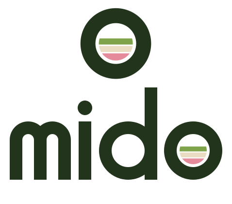
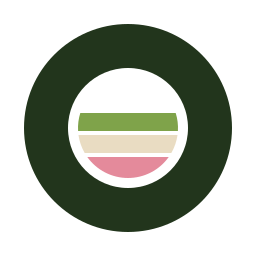
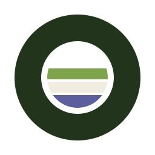
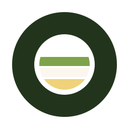
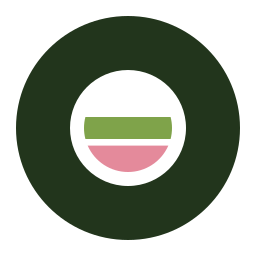
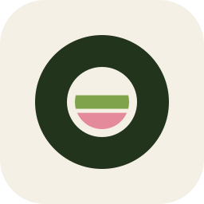

In use

Mido · logo kit · concept A «Layers»
The «o» is a glass seen from the side, poured in layers. On the site the layers take the colours of the drink the customer builds — the logo is part of the builder.
Palette
Versions

The «o» follows the drink

Strawberry
Blueberry
Banana · coconut

In use
Rules